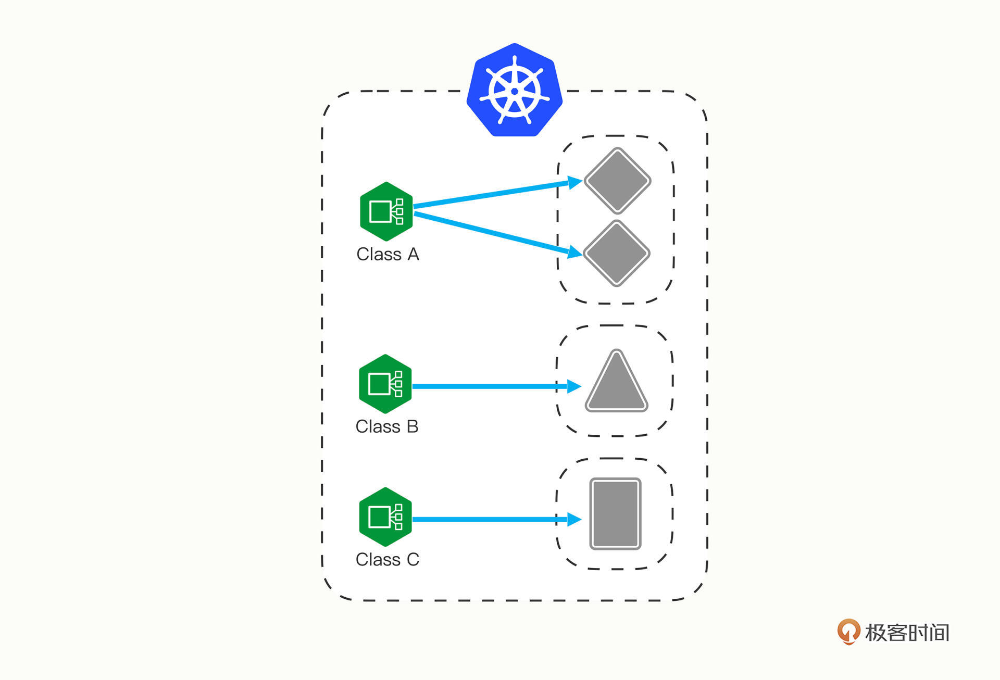
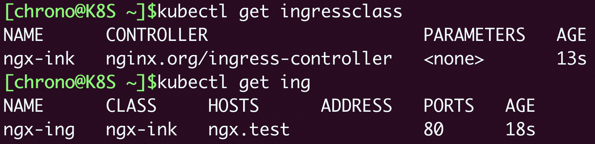
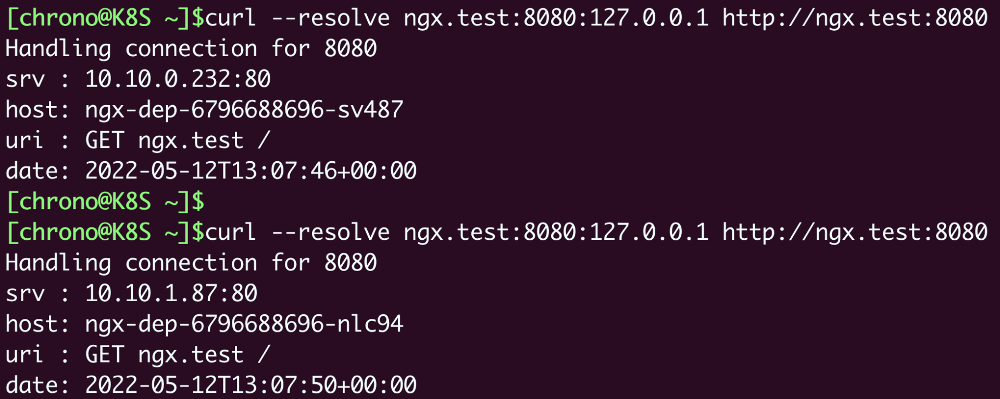
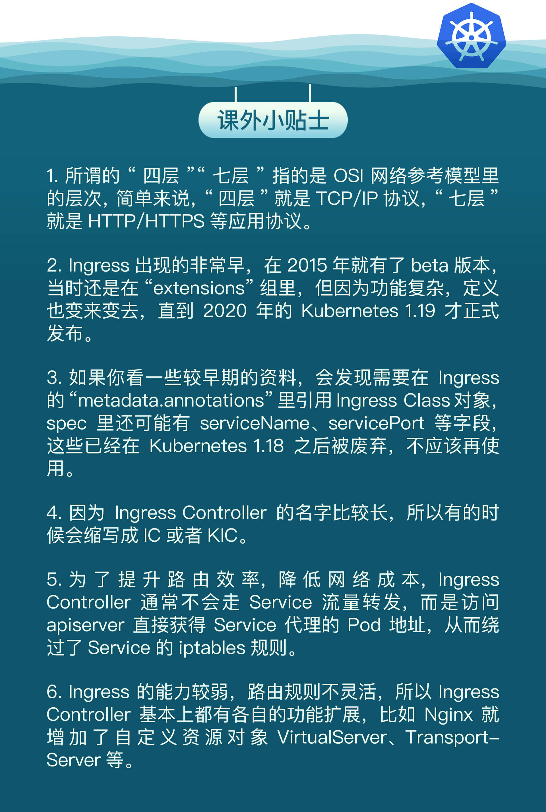

- 00 开篇词 迎难而上，做云原生时代的弄潮儿.md
- 00 课前准备 动手实践才是最好的学习方式.md
- 01 初识容器：万事开头难.md
- 02 被隔离的进程：一起来看看容器的本质.md
- 03 容器化的应用：会了这些你就是Docker高手.md
- 04 创建容器镜像：如何编写正确、高效的Dockerfile.md
- 05 镜像仓库：该怎样用好Docker Hub这个宝藏.md
- 06 打破次元壁：容器该如何与外界互联互通.md
- 07 实战演练：玩转Docker.md
- 08 视频：入门篇实操总结.md
- 09 走近云原生：如何在本机搭建小巧完备的Kubernetes环境.md
- 10 自动化的运维管理：探究Kubernetes工作机制的奥秘.md
- 11 YAML：Kubernetes世界里的通用语.md
- 12 Pod：如何理解这个Kubernetes里最核心的概念？.md
- 13 Job_CronJob：为什么不直接用Pod来处理业务？.md
- 14 ConfigMap_Secret：怎样配置、定制我的应用.md
- 15 实战演练：玩转Kubernetes（1）.md
- 16 视频：初级篇实操总结.md
- 17 更真实的云原生：实际搭建多节点的Kubernetes集群.md
- 18 Deployment：让应用永不宕机.md
- 19 Daemonset：忠实可靠的看门狗.md
- 20 Service：微服务架构的应对之道.md
- 21 Ingress：集群进出流量的总管.md
- 22 实战演练：玩转Kubernetes（2）.md
- 23 视频：中级篇实操总结.md
- 24 PersistentVolume：怎么解决数据持久化的难题？.md
- 25 PersistentVolume + NFS：怎么使用网络共享存储？.md
- 26 StatefulSet：怎么管理有状态的应用？.md
- 27 滚动更新：如何做到平滑的应用升级降级？.md
- 28 应用保障：如何让Pod运行得更健康？.md
- 29 集群管理：如何用名字空间分隔系统资源？.md
- 30 系统监控：如何使用Metrics Server和Prometheus？.md
- 31 网络通信：CNI是怎么回事？又是怎么工作的？.md
- 32 实战演练：玩转Kubernetes（3）.md
- 33 视频：高级篇实操总结.md
- 加餐 docker-compose：单机环境下的容器编排工具.md
- 加餐 谈谈Kong Ingress Controller.md
- 结束语 是终点，更是起点.md
21 Ingress：集群进出流量的总管
你好，我是Chrono。
上次课里我们学习了Service对象，它是Kubernetes内置的负载均衡机制，使用静态IP地址代理动态变化的Pod，支持域名访问和服务发现，是微服务架构必需的基础设施。
Service很有用，但也只能说是“基础设施”，它对网络流量的管理方案还是太简单，离复杂的现代应用架构需求还有很大的差距，所以Kubernetes就在Service之上又提出了一个新的概念：Ingress。
比起Service，Ingress更接近实际业务，对它的开发、应用和讨论也是社区里最火爆的，今天我们就来看看Ingress，还有与它关联的Ingress Controller、Ingress Class等对象。
为什么要有Ingress
通过上次课程的讲解，我们知道了Service的功能和运行机制，它本质上就是一个由kube-proxy控制的四层负载均衡，在TCP/IP协议栈上转发流量（Service工作原理示意图）：

但在四层上的负载均衡功能还是太有限了，只能够依据IP地址和端口号做一些简单的判断和组合，而我们现在的绝大多数应用都是跑在七层的HTTP/HTTPS协议上的，有更多的高级路由条件，比如主机名、URI、请求头、证书等等，而这些在TCP/IP网络栈里是根本看不见的。
Service还有一个缺点，它比较适合代理集群内部的服务。如果想要把服务暴露到集群外部，就只能使用NodePort或者LoadBalancer这两种方式，而它们都缺乏足够的灵活性，难以管控，这就导致了一种很无奈的局面：我们的服务空有一身本领，却没有合适的机会走出去大展拳脚。
该怎么解决这个问题呢？
Kubernetes还是沿用了Service的思路，既然Service是四层的负载均衡，那么我再引入一个新的API对象，在七层上做负载均衡是不是就可以了呢？
不过除了七层负载均衡，这个对象还应该承担更多的职责，也就是作为流量的总入口，统管集群的进出口数据，“扇入”“扇出”流量（也就是我们常说的“南北向”），让外部用户能够安全、顺畅、便捷地访问内部服务（图片来源）：

所以，这个API对象就顺理成章地被命名为 Ingress，意思就是集群内外边界上的入口。
为什么要有Ingress Controller
再对比一下Service我们就能更透彻地理解Ingress。
Ingress可以说是在七层上另一种形式的Service，它同样会代理一些后端的Pod，也有一些路由规则来定义流量应该如何分配、转发，只不过这些规则都使用的是HTTP/HTTPS协议。
你应该知道，Service本身是没有服务能力的，它只是一些iptables规则，真正配置、应用这些规则的实际上是节点里的kube-proxy组件。如果没有kube-proxy，Service定义得再完善也没有用。
同样的，Ingress也只是一些HTTP路由规则的集合，相当于一份静态的描述文件，真正要把这些规则在集群里实施运行，还需要有另外一个东西，这就是 Ingress Controller，它的作用就相当于Service的kube-proxy，能够读取、应用Ingress规则，处理、调度流量。
按理来说，Kubernetes应该把Ingress Controller内置实现，作为基础设施的一部分，就像kube-proxy一样。
不过Ingress Controller要做的事情太多，与上层业务联系太密切，所以Kubernetes把Ingress Controller的实现交给了社区，任何人都可以开发Ingress Controller，只要遵守Ingress规则就好。
这就造成了Ingress Controller“百花齐放”的盛况。
由于Ingress Controller把守了集群流量的关键入口，掌握了它就拥有了控制集群应用的“话语权”，所以众多公司纷纷入场，精心打造自己的Ingress Controller，意图在Kubernetes流量进出管理这个领域占有一席之地。
这些实现中最著名的，就是老牌的反向代理和负载均衡软件Nginx了。从Ingress Controller的描述上我们也可以看到，HTTP层面的流量管理、安全控制等功能其实就是经典的反向代理，而Nginx则是其中稳定性最好、性能最高的产品，所以它也理所当然成为了Kubernetes里应用得最广泛的Ingress Controller。
不过，因为Nginx是开源的，谁都可以基于源码做二次开发，所以它又有很多的变种，比如社区的Kubernetes Ingress Controller（https://github.com/kubernetes/ingress-nginx）、Nginx公司自己的Nginx Ingress Controller（https://github.com/nginxinc/kubernetes-ingress）、还有基于OpenResty的Kong Ingress Controller（https://github.com/Kong/kubernetes-ingress-controller）等等。
根据Docker Hub上的统计，Nginx公司的开发实现是下载量最多的Ingress Controller，所以我将以它为例，讲解Ingress和Ingress Controller的用法。
下面的这张图就来自Nginx官网，比较清楚地展示了Ingress Controller在Kubernetes集群里的地位：

为什么要有IngressClass
那么到现在，有了Ingress和Ingress Controller，我们是不是就可以完美地管理集群的进出流量了呢？
最初Kubernetes也是这么想的，一个集群里有一个Ingress Controller，再给它配上许多不同的Ingress规则，应该就可以解决请求的路由和分发问题了。
但随着Ingress在实践中的大量应用，很多用户发现这种用法会带来一些问题，比如：
- 由于某些原因，项目组需要引入不同的Ingress Controller，但Kubernetes不允许这样做；
- Ingress规则太多，都交给一个Ingress Controller处理会让它不堪重负；
- 多个Ingress对象没有很好的逻辑分组方式，管理和维护成本很高；
- 集群里有不同的租户，他们对Ingress的需求差异很大甚至有冲突，无法部署在同一个Ingress Controller上。
所以，Kubernetes就又提出了一个 Ingress Class 的概念，让它插在Ingress和Ingress Controller中间，作为流量规则和控制器的协调人，解除了Ingress和Ingress Controller的强绑定关系。
现在，Kubernetes用户可以转向管理Ingress Class，用它来定义不同的业务逻辑分组，简化Ingress规则的复杂度。比如说，我们可以用Class A处理博客流量、Class B处理短视频流量、Class C处理购物流量。

这些Ingress和Ingress Controller彼此独立，不会发生冲突，所以上面的那些问题也就随着Ingress Class的引入迎刃而解了。
如何使用YAML描述Ingress/Ingress Class
我们花了比较多的篇幅学习Ingress、 Ingress Controller、Ingress Class这三个对象，全是理论，你可能觉得学得有点累。但这也是没办法的事情，毕竟现实的业务就是这么复杂，而且这个设计架构也是社区经过长期讨论后达成的一致结论，是我们目前能获得的最佳解决方案。
好，了解了这三个概念之后，我们就可以来看看如何为它们编写YAML描述文件了。
和之前学习Deployment、Service对象一样，首先应当用命令 kubectl api-resources 查看它们的基本信息，输出列在这里了：
kubectl api-resources
NAME SHORTNAMES APIVERSION NAMESPACED KIND
ingresses ing networking.k8s.io/v1 true Ingress
ingressclasses networking.k8s.io/v1 false IngressClass
你可以看到，Ingress和Ingress Class的apiVersion都是“networking.k8s.io/v1”，而且Ingress有一个简写“ing”，但Ingress Controller怎么找不到呢？
这是因为Ingress Controller和其他两个对象不太一样，它不只是描述文件，是一个要实际干活、处理流量的应用程序，而应用程序在Kubernetes里早就有对象来管理了，那就是Deployment和DaemonSet，所以我们只需要再学习Ingress和Ingress Class的的用法就可以了。
先看Ingress。
Ingress也是可以使用 kubectl create 来创建样板文件的，和Service类似，它也需要用两个附加参数：
--class，指定Ingress从属的Ingress Class对象。--rule，指定路由规则，基本形式是“URI=Service”，也就是说是访问HTTP路径就转发到对应的Service对象，再由Service对象转发给后端的Pod。
好，现在我们就执行命令，看看Ingress到底长什么样：
export out="--dry-run=client -o yaml"
kubectl create ing ngx-ing --rule="ngx.test/=ngx-svc:80" --class=ngx-ink $out
apiVersion: networking.k8s.io/v1
kind: Ingress
metadata:
name: ngx-ing
spec:
ingressClassName: ngx-ink
rules:
- host: ngx.test
http:
paths:
- path: /
pathType: Exact
backend:
service:
name: ngx-svc
port:
number: 80
在这份Ingress的YAML里，有两个关键字段：“ingressClassName”和“rules”，分别对应了命令行参数，含义还是比较好理解的。
只是“rules”的格式比较复杂，嵌套层次很深。不过仔细点看就会发现它是把路由规则拆散了，有host和http path，在path里又指定了路径的匹配方式，可以是精确匹配（Exact）或者是前缀匹配（Prefix），再用backend来指定转发的目标Service对象。
不过我个人觉得，Ingress YAML里的描述还不如 kubectl create 命令行里的 --rule 参数来得直观易懂，而且YAML里的字段太多也很容易弄错，建议你还是让kubectl来自动生成规则，然后再略作修改比较好。
有了Ingress对象，那么与它关联的Ingress Class是什么样的呢？
其实Ingress Class本身并没有什么实际的功能，只是起到联系Ingress和Ingress Controller的作用，所以它的定义非常简单，在“spec”里只有一个必需的字段“controller”，表示要使用哪个Ingress Controller，具体的名字就要看实现文档了。
比如，如果我要用Nginx开发的Ingress Controller，那么就要用名字“nginx.org/ingress-controller”：
apiVersion: networking.k8s.io/v1
kind: IngressClass
metadata:
name: ngx-ink
spec:
controller: nginx.org/ingress-controller
Ingress和Service、Ingress Class的关系我也画成了一张图，方便你参考：

如何在Kubernetes里使用Ingress/Ingress Class
因为Ingress Class很小，所以我把它与Ingress合成了一个YAML文件，让我们用 kubectl apply 创建这两个对象：
kubectl apply -f ingress.yml
然后我们用 kubectl get 来查看对象的状态：
kubectl get ingressclass
kubectl get ing

命令 kubectl describe 可以看到更详细的Ingress信息：
kubectl describe ing ngx-ing

可以看到，Ingress对象的路由规则Host/Path就是在YAML里设置的域名“ngx.test/”，而且已经关联了第20讲里创建的Service对象，还有Service后面的两个Pod。
另外，不要对Ingress里“Default backend”的错误提示感到惊讶，在找不到路由的时候，它被设计用来提供一个默认的后端服务，但不设置也不会有什么问题，所以大多数时候我们都忽略它。
如何在Kubernetes里使用Ingress Controller
准备好了Ingress和Ingress Class，接下来我们就需要部署真正处理路由规则的Ingress Controller。
你可以在GitHub上找到Nginx Ingress Controller的项目（https://github.com/nginxinc/kubernetes-ingress），因为它以Pod的形式运行在Kubernetes里，所以同时支持Deployment和DaemonSet两种部署方式。这里我选择的是Deployment，相关的YAML也都在我们课程的项目（https://github.com/chronolaw/k8s_study/tree/master/ingress）里复制了一份。
Nginx Ingress Controller的安装略微麻烦一些，有很多个YAML需要执行，但如果只是做简单的试验，就只需要用到4个YAML：
kubectl apply -f common/ns-and-sa.yaml
kubectl apply -f rbac/rbac.yaml
kubectl apply -f common/nginx-config.yaml
kubectl apply -f common/default-server-secret.yaml
前两条命令为Ingress Controller创建了一个独立的名字空间“nginx-ingress”，还有相应的账号和权限，这是为了访问apiserver获取Service、Endpoint信息用的；后两条则是创建了一个ConfigMap和Secret，用来配置HTTP/HTTPS服务。
部署Ingress Controller不需要我们自己从头编写Deployment，Nginx已经为我们提供了示例YAML，但创建之前为了适配我们自己的应用还必须要做几处小改动：
- metadata里的name要改成自己的名字，比如
ngx-kic-dep。 - spec.selector和template.metadata.labels也要修改成自己的名字，比如还是用
ngx-kic-dep。 - containers.image可以改用apline版本，加快下载速度，比如
nginx/nginx-ingress:2.2-alpine。 - 最下面的args要加上
-ingress-class=ngx-ink，也就是前面创建的Ingress Class的名字，这是让Ingress Controller管理Ingress的关键。
修改完之后，Ingress Controller的YAML大概是这个样子：
apiVersion: apps/v1
kind: Deployment
metadata:
name: ngx-kic-dep
namespace: nginx-ingress
spec:
replicas: 1
selector:
matchLabels:
app: ngx-kic-dep
template:
metadata:
labels:
app: ngx-kic-dep
...
spec:
containers:
- image: nginx/nginx-ingress:2.2-alpine
...
args:
- -ingress-class=ngx-ink
有了Ingress Controller，这些API对象的关联就更复杂了，你可以用下面的这张图来看出它们是如何使用对象名字联系起来的：

确认Ingress Controller 的YAML修改完毕之后，就可以用 kubectl apply 创建对象：
kubectl apply -f kic.yml
注意Ingress Controller位于名字空间“nginx-ingress”，所以查看状态需要用“-n”参数显式指定，否则我们只能看到“default”名字空间里的Pod：
kubectl get deploy -n nginx-ingress
kubectl get pod -n nginx-ingress

现在Ingress Controller就算是运行起来了。
不过还有最后一道工序，因为Ingress Controller本身也是一个Pod，想要向外提供服务还是要依赖于Service对象。所以你至少还要再为它定义一个Service，使用NodePort或者LoadBalancer暴露端口，才能真正把集群的内外流量打通。这个工作就交给你课下自己去完成了。
这里，我就用[第15讲]里提到的命令kubectl port-forward，它可以直接把本地的端口映射到Kubernetes集群的某个Pod里，在测试验证的时候非常方便。
下面这条命令就把本地的8080端口映射到了Ingress Controller Pod的80端口：
kubectl port-forward -n nginx-ingress ngx-kic-dep-8859b7b86-cplgp 8080:80 &

我们在curl发测试请求的时候需要注意，因为Ingress的路由规则是HTTP协议，所以就不能用IP地址的方式访问，必须要用域名、URI。
你可以修改 /etc/hosts 来手工添加域名解析，也可以使用 --resolve 参数，指定域名的解析规则，比如在这里我就把“ngx.test”强制解析到“127.0.0.1”，也就是被 kubectl port-forward 转发的本地地址：
curl --resolve ngx.test:8080:127.0.0.1 http://ngx.test:8080

把这个访问结果和上一节课里的Service对比一下，你会发现最终效果是一样的，都是把请求转发到了集群内部的Pod，但Ingress的路由规则不再是IP地址，而是HTTP协议里的域名、URI等要素。
小结
好了，今天就讲到这里，我们学习了Kubernetes里七层的反向代理和负载均衡对象，包括Ingress、Ingress Controller、Ingress Class，它们联合起来管理了集群的进出流量，是集群入口的总管。
小结一下今天的主要内容：
- Service是四层负载均衡，能力有限，所以就出现了Ingress，它基于HTTP/HTTPS协议定义路由规则。
- Ingress只是规则的集合，自身不具备流量管理能力，需要Ingress Controller应用Ingress规则才能真正发挥作用。
- Ingress Class解耦了Ingress和Ingress Controller，我们应当使用Ingress Class来管理Ingress资源。
- 最流行的Ingress Controller是Nginx Ingress Controller，它基于经典反向代理软件Nginx。
再补充一点，目前的Kubernetes流量管理功能主要集中在Ingress Controller上，已经远不止于管理“入口流量”了，它还能管理“出口流量”，也就是 egress，甚至还可以管理集群内部服务之间的“东西向流量”。
此外，Ingress Controller通常还有很多的其他功能，比如TLS终止、网络应用防火墙、限流限速、流量拆分、身份认证、访问控制等等，完全可以认为它是一个全功能的反向代理或者网关，感兴趣的话你可以找找这方面的资料。
课下作业
最后是课下作业时间，给你留两个思考题：
- 四层负载均衡（Service）与七层负载均衡（Ingress）有哪些异同点？
- 你认为Ingress Controller作为集群的流量入口还应该做哪些事情？
欢迎留言写下你的想法，思考题闭环是你巩固所学的第一步，进步从完成开始。
下节课是我们这个章节的实战演练课，我们下节课再见。

© 2019 - 2023 Liangliang Lee. Powered by Vert.x and hexo-theme-book.